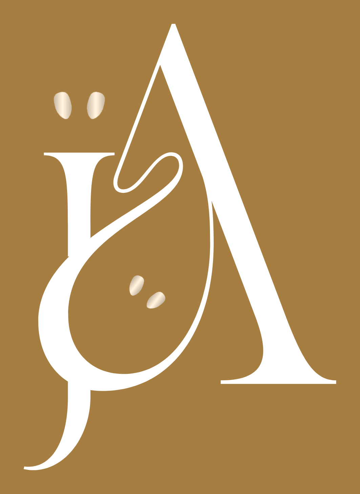

John Apple
Direction artistique, communication visuelle & multimédia
De l'intention créative à l'expérience finale : depuis 2003, je conçois des univers et je les conduis jusqu'à leur réalisation.
- Musique
- Événementiel
- Communication
- Photographie
- Audiovisuel
- Numérique
Depuis 2003
Un parcours transversal
Depuis 2003, mon parcours évolue à la croisée de la direction artistique musicale, de la création événementielle, de la communication, de la photographie et de la réalisation audiovisuelle. Ces expériences m'ont permis de concevoir des univers, de traduire des intentions en propositions créatives, de coordonner des intervenants et d'accompagner des projets jusqu'à leur réalisation. Aujourd'hui, j'élargis cette pratique aux technologies numériques, à l'intelligence artificielle et au Web3.
- 2003Premières expériences en direction artistique musicale.
- Développement dans l'événementiel, la communication et la création graphique.
- Photographie et réalisation audiovisuelle.
- 2024Activité indépendante et technologies numériques : intelligence artificielle et Web3.
Une méthode, de l'intention à la livraison
Comprendre la demande et le contexte.
Identifier le public, les objectifs et les contraintes.
Définir une intention et un parti pris créatif.
Développer et présenter des propositions.
Organiser les moyens et coordonner les intervenants.
Superviser la réalisation et contrôler la cohérence.
Évaluer le résultat et identifier les enseignements.
Cinq terrains de création
Direction artistique musicale
Univers visuel, image et cohérence de projets musicaux : le point de départ de mon parcours, en 2003.
Événementiel & activation de marque
Concevoir et coordonner des expériences, des événements culturels aux activations de marque.
Communication visuelle
Identités, supports et déclinaisons, au service d'un objectif et d'une marque.
Photographie & audiovisuel
Films de marque, institutionnels et industriels, photographie, réalisation et postproduction.
Numérique, IA & Web3
Depuis 2024, j'élargis ma pratique aux technologies numériques, à l'intelligence artificielle et au Web3.
Dans chaque projet
- Conception et narration
- Cohérence visuelle et multimédia
- Coordination d'intervenants
- Relation client
- Organisation, délais et qualité
- Veille créative et technologique
Projets en ligne

Parlons de votre projet.
Pour découvrir les réalisations en détail ou imaginer la suite, retrouvez-moi en ligne.